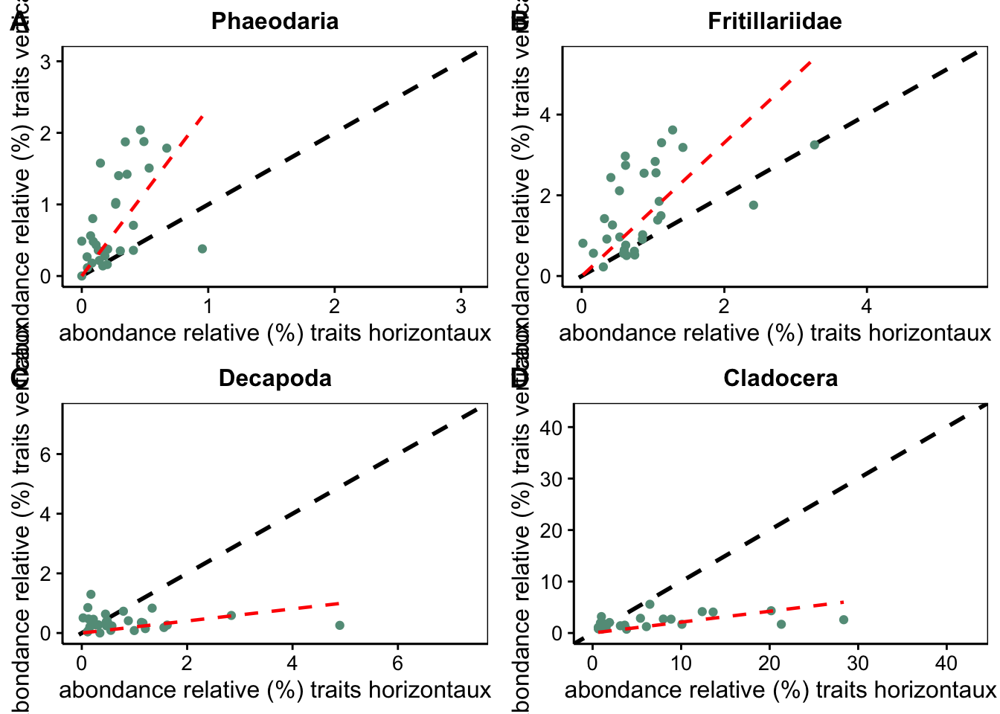

Les organismes planctoniques se définissent par l’incapacité de lutter contre le courant. On retrouve parmi ces organismes les méduses, les larves de poissons ou encore le krill. Ces organismes sont à la base de nombreuses chaines alimentaires. L’étude de l’abondance du plancton et de ces variations au cours du temps est indispensable.
Le plancton est échantillonné principalement par des traits de filets. Chaque prélèvement permet la collecte de plusieurs centaines à quelques milliers d’organismes. La classification des organismes est facilités à l’aide de la classification semi-automatise. Les échantillons sont numérisées et analyser afin d’extraire chaque organisme. Grâce à un set d’apprentissage réalisé par des spécialistes du plancton, des algorithmes sont capable de classé les organismes. Il reste à l’expérimentateur à valider ce classement (Philippe and Kevin 2014).
library("sf")
Linking to GEOS 3.10.2, GDAL 3.4.2, PROJ 8.2.1; sf_use_s2() is TRUE
── Column specification ────────────────────────────────────────────────────────
Delimiter: ","
chr (4): station, localisation, trait, url
dbl (2): latitude, longitude
ℹ Use `spec()` to retrieve the full column specification for this data.
ℹ Specify the column types or set `show_col_types = FALSE` to quiet this message.
station_v <-filter(station, trait =="vertical")station_hv <-filter(station, trait =="horizontal-vertical")station_do <-filter(station, trait =="Double oblique")map <-ggplot(data = world) +geom_sf(color ="black", fill ="#C8AD7F") +coord_sf(xlim =c(-8, 40), ylim =c(30, 48), expand =FALSE) +xlab("Longitude") +ylab("Latitude") +ggtitle("Mer Méditerranée") +theme(panel.background =element_rect(fill="#80D0D0")) +annotation_north_arrow(location ="bl", which_north ="true",pad_x =unit(0, "in"), pad_y =unit(2.6, "in"),style = north_arrow_fancy_orienteering) +annotation_scale(location ="bl") +annotate(geom ="point", x = station_v$longitude, y = station_v$latitude, size =3, color ="yellow") +annotate(geom ="point", x = station_hv$longitude, y = station_hv$latitude, size =3, color ="red") +annotate(geom ="point", x = station_do$longitude, y = station_do$latitude, size =3, color ="purple")map
Scale on map varies by more than 10%, scale bar may be inaccurate
En mer Méditerranée, on dénombre 9 séries temporelles monitoré en continu de plus de 10 ans. Différentes méthodes d’échantillonnages sont effectuée. La majorité des suivis sont effectuée via des traits de filets verticaux (point jaune). En Espagne, il a été décidé de réaliser des traits de filets en double oblique (point mauve). La station de recherche de Calvi (Corse, France) réalisé un suivi via des traits horizontaux et a débuté des prélèvements verticaux (point rouge).
La série spatio-temporelle en subsurface (obtenu via des traits de filets horizontaux) a permis de mettre en évidence une année typique de la variation du plancton. Trois années particulière ont été obtenues 2007, 2012 et 2015. Les anomalies d’abondance en plancton sont corrélées avec la température, la disponibilité en nutriments et les vents (Fullgrabe et al. 2020). La série spatio-temporelle obtenue via des traits verticaux (en rouge) débute en 2014
combine_charts(list(p1,p2,p3,p4))

On dénombre 335 échantillons horizontaux et 76 verticaux. En appliquant une fenêtre de tolérance de 2 jours d’écart maximum et de 2h d’ecart, 30 stations ont été retenue. La tendance globale entre les deux séries est similaire. Cependant, la comparaison des groupes d’intérêt met en avant des différences.
La sous classe des Phaedoria (chromiste) et la famille des Fritillaridea (tunicier) sont plus abondantes dans les traits de filets verticaux alors que l’ordre des Decapoda (crustacée) et l’ordre des Cladocera (crustacée) est plus abondants dans les trait de plancton horizontaux.
Perspectives
La comparaison par station similaire réduit trop fortement le nombre d’observation. La prochaine étape de cette étude est de proposer une comparaison les deux séries temporelles directement afin d’utiliser l’ensemble des données disponibles. Cette comparaison va permettre de faire le lien entre les traits verticaux et les traits horizontaux.
References
Fullgrabe, Lovina, Philippe Grosjean, Sylvie Gobert, Pierre Lejeune, Michèle Leduc, Guyliann Engels, Patrick Dauby, Pierre Boissery, and Jonathan Richir. 2020. “Zooplankton Dynamics in a Changing Environment: A 13-Year Survey in the Northwestern Mediterranean Sea.”Marine Environmental Research 159 (July): 104962. https://doi.org/10.1016/j.marenvres.2020.104962.
Philippe, Grosjean, and Denis Kevin. 2014. “Supervised Classification of Images, Applied to Plankton Samples Using R and Zooimage.” In, 331–65. Elsevier. https://doi.org/10.1016/B978-0-12-411511-8.00013-X.